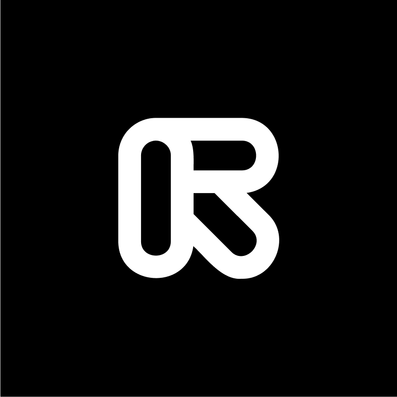
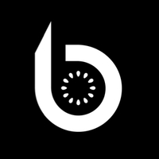

마케터의 AX 역량은
이미 기본값
마케터의 80%는 콘텐츠 제작에 AI를 사용하고, 75%는 미디어 제작에 AI를 활용합니다. 차이는 연결 방식에서 벌어집니다.
문제는 AI가 아니라, 일하는 방식입니다.
마케터의 성장은 일하는 방식에서 시작됩니다.
AI를 실무에 제대로 적용하고 싶은 마케터를 위한 4주 챌린지, 지금 탑승하세요.
다른 마케터는 AI로
성과를 내고 있다는데,
나만 제자리인 것 같다.
ChatGPT로
카피 초안은 뽑는데,
결국 처음부터
다시 쓴다.
AI 툴은 이것저것
써봤는데,
실무에 정착된 건
하나도 없다.
콘텐츠 만들고,
광고 세팅하고,
보고서 쓰느라
하루가 다 끝난다.
이제 중요한 건 AI 툴을 한 번 써보는 경험이 아닙니다.
실무 흐름에 AI를 연결해 더 빠르게 실행하고, 더 정교하게 성과를 만드는 방식입니다.
이미 많은 마케터가 AI를 씁니다. 성과 차이는 실무 흐름 안에 AI를 얼마나 제대로 연결했는지에서 벌어집니다.
마케터의 80%는 콘텐츠 제작에 AI를 사용하고, 75%는 미디어 제작에 AI를 활용합니다. 차이는 연결 방식에서 벌어집니다.
마케터의 78%가 필요한 수준의 개인화 콘텐츠를 충분히 만들지 못하고 있다고 말합니다.
McKinsey는 AI가 마케팅 생산성을 마케팅 지출의 15% 수준까지 높일 수 있다고 분석했습니다.
76%의 조직이 AI로 속도 개선을 경험했지만, 데이터 품질이 충분하다고 답한 조직은 44%에 그쳤습니다.
숏폼 콘텐츠 제작, 멀티채널 리퍼포징, SEO 최적화, 운영 자동화, AX 포트폴리오까지
마케터의 실제 업무 흐름을 따라가며 반복 업무는 줄이고 실행력은 높이는 4주 실전 챌린지입니다.
배우고 끝나는 교육이 아니라 실무에 바로 적용할 방식과 결과물, 그리고 커리어에 활용할 포트폴리오까지 만드는 챌린지입니다.
스크립트 → 영상 생성 → 편집 → 썸네일까지 End-to-End 연결로
반복 가능한 콘텐츠 제작 파이프라인 구축에 집중합니다.
1개 원본을 블로그 · 인스타 · 링크드인 · 뉴스레터 · 숏폼 자동 변환해
SEO 최적화로 콘텐츠 생산성과 도달 효율을 함께 높입니다.
트리거 → 액션 → 결과 구조를 이해하고
마케팅 운영에 맞는 노코드 자동화 흐름을 설계합니다.
AI 콘텐츠 결과물, Before / After 비교 문서, 자동화 설계서,
AX 포트폴리오 초안까지 실제 나만의 산출물로 이어집니다.
반복 업무에 쫓기던 일상에서 벗어나, 콘텐츠를 만들고 확장하고 운영하는
실무 흐름에 AI를 직접 연결하는 방식이 생깁니다.
초안 작성, 소재 정리, 채널별 변환 등 반복 업무를 줄이고 더 중요한 기획과 판단에 집중하는 AX 역량이 생깁니다.
내 업무 흐름 안에서 어디에 AI를 연결해야 효과가 나는지 판단하는 기준이 생깁니다.
그때그때 버티듯 일하는 방식에서 벗어나, 더 적게 반복하고 더 빠르게 실행하는 흐름을 만듭니다.
수강 과정에서 만든 산출물을 바탕으로 취업·이직이나 내부 평가에도 활용할 수 있는 AX 포트폴리오를 정리합니다.
※ 세부 커리큘럼은 일부 변동 가능합니다.
6. 2. (화) 19:00 – 21:00
❶ 실제 브랜드(본인 회사 or 가상) 기준으로 AI 숏폼 콘텐츠 1편 제작
❷ AI 콘텐츠 제작 Before/After 비교 문서
실습은 가볍게 시작하고, 필요한 만큼만 준비해도 충분합니다.
ChatGPT, Claude를 제외한 대부분의 툴은 무료로도 실습이 가능합니다.
 무료 가능
무료 가능
 무료 가능
무료 가능
 무료 가능
무료 가능

무료 가능
무료 가능반복 업무는 줄이고, 더 중요한 일에 집중하는 변화
원티드는 그 AX 전환을 내부에서 먼저 경험하고 검증했습니다
이걸 왜 이제야 했을까. 반복적으로 손이 가던 준비 업무를 자동화하니, 시간을 빼앗기던 일에서 벗어나 더 중요한 판단과 실행에 집중할 수 있었습니다.
8시간 걸리던 일이 30분이 됐어요. 막연하게만 느껴졌던 AI 활용이 실제 업무 시간 단축으로 이어지면서, AX 전환이 아이디어가 아니라 실무 방식의 변화라는 걸 체감했습니다.
비개발자도 AX 전환을 만들 수 있었어요. 개발 지식이 없어도 직접 자동화와 업무 개선을 구현해보면서, AI는 일부 사람만의 영역이 아니라 누구나 업무에 연결할 수 있는 방식이라는 자신감이 생겼습니다.
작은 자동화 하나가 일하는 방식을 바꿨어요. 단순 반복 업무가 효율화됐을 때의 짜릿함이 있었어요. 작은 자동화 하나만으로도 일하는 방식이 훨씬 가벼워지고, 더 중요한 일에 집중할 수 있다는 걸 체감했습니다.
※ 본 후기는 원티드 사내 프로그램 'AX 챔피언' 참여 후기를 바탕으로 재구성했습니다.
당신의 일도 달라질 수 있습니다.
반복은 줄이고, 실행은 더 빨라지고, 성과는 더 선명해지는 방식으로요.
4.4
/ 5
4.8
/ 5
88%
현직자 멘토링으로 다듬고, 밋업으로 연결되고, 커리어 기회로 이어집니다.
수강이 끝난 뒤에도 더 잘 일하고 더 멀리 갈 수 있도록 현직자에게 점검받고,
같은 방향의 사람들과 연결되며, 다음 기회까지 준비할 수 있습니다.
Benefit 1
내가 만든 콘텐츠, 자동화 아이디어, 포트폴리오를 현직자 관점에서 점검받을 수 있습니다. 10년차 이상 현업 마케터가 실무 기준으로 직접 짚어드립니다.
Benefit 2
수료 후 AX 챌린저들과 직접 만나 서로의 실무 경험과 인사이트를 나눌 수 있습니다. 네트워킹을 통해 다음 커리어 확장으로 이어질 기회를 잡으세요.
Benefit 3
내 이력과 활동 데이터를 바탕으로, 나에게 맞는 AX 포지션을 더 빠르게 추천받을 수 있습니다.
Benefit 4
실무에 바로 적용할 수 있는 프롬프트 자료를 통해, 반복적인 업무를 더 가볍게 처리할 수 있습니다.
내 실무에 바로 적용할 방식은 물론, 팀 안에서 함께 실행할 기준까지 가져갈 수 있습니다.
수강료
249,000원
AX를 구현하는 힘은 강사에게 배우고,
마케팅 실무에 맞게 적용하는 힘은 멘토와 함께 잡아갑니다.
강사
김기수
원티드랩 AI 부문장
17년 이상 실무 경험을 가진 풀스택 엔지니어·AX 실무 교육 전문가. 툴을 아는 데서 끝나지 않고, 직접 구현하고 실무에 적용할 수 있도록 안내합니다.
멘토
정기수
원티드랩 AI 부문장
AX 전환이 실제 업무 방식의 변화로 이어질 수 있도록, AI 관점에서 실무 적용의 방향과 기준을 제시합니다.
멘토
정기수
원티드랩 AI 부문장
AX 전환이 실제 업무 방식의 변화로 이어질 수 있도록, AI 관점에서 실무 적용의 방향과 기준을 제시합니다.
멘토
정기수
원티드랩 AI 부문장
AX 전환이 실제 업무 방식의 변화로 이어질 수 있도록, AI 관점에서 실무 적용의 방향과 기준을 제시합니다.
※ 현직자 멘토진은 변경될 수 있습니다.
모집 마감부터 강의, 멘토링, 오프라인 밋업까지 AX 전환에 집중할 수 있도록 4주 일정을 한눈에 정리했습니다.
01
5월 26일 18:00까지
정원 마감 시 조기 마감
하단 ‘참여 신청하기’ 버튼을 눌러 수강신청과 교육비 결제를 완료해주세요.
02
6월 2일 – 6월 11일
화 · 목 19:00 – 21:00
1회차 6월 2일 화요일
2회차 6월 4일 목요일
3회차 6월 9일 화요일
4회차 6월 11일 목요일
03
6월 16일 – 6월 25일
기간 내 진행
현직자 멘토와 함께 배운 내용을 실제 업무에 어떻게 적용할지 점검합니다.
04
7월 1일 19:00 – 22:00
롯데타워 35층 원티드랩
강사 · 멘토 · 참가자가 직접 만나 네트워킹하며 커리어 기회를 확장합니다.
05
7월 1일 –
AX 챌린저 프라이빗 커뮤니티에서 맞춤형 채용공고 추천, 최신 트렌드와 인사이트 공유 혜택을 이어서 받아보세요.
Q. 어떤 분들에게 가장 잘 맞는 프로그램인가요?
Q. AX 역량이 아직 부족해도 참여할 수 있나요?
Q. 강의는 어떤 방식으로 진행되나요?
Q. 강의 다시 보기 제공이 가능한가요?
Q. 멘토링은 어떻게 진행되나요?
Q. 멘토링 참석은 필수인가요?
추가 문의사항 | learning@wantedlab.com